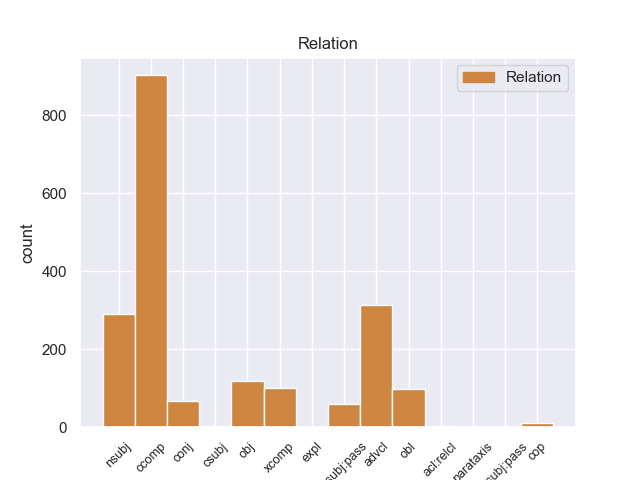
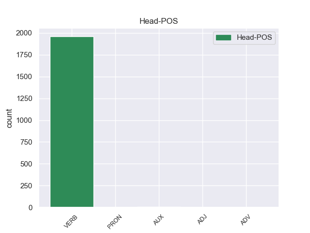

Distribution of features within this leaf



Agreement Rules sorted by frequency.
- When the dependent token is the clausal complement(ccomp) of the head token, and the dependent token is VERB.
1 Το _ _ _ _ 0 _ _ _
2 άρθρο _ _ _ _ 0 _ _ _
3 9 _ _ _ _ 0 _ _ _
4 του _ _ _ _ 0 _ _ _
5 Πρωτοκόλλου _ _ _ _ 0 _ _ _
6 , _ _ _ _ 0 _ _ _
7 όπως _ _ _ _ 0 _ _ _
8 επεσήμανε επεσήμανε VERB _ Aspect=Perf|Mood=Ind|Number=Sing|Person=3|Tense=Past|VerbForm=Fin|Voice=Act 0 _ _ _
9 με _ _ _ _ 0 _ _ _
10 αυστηρότητα _ _ _ _ 0 _ _ _
11 η _ _ _ _ 0 _ _ _
12 Πρόεδρος _ _ _ _ 0 _ _ _
13 Fontaine _ _ _ _ 0 _ _ _
14 σ _ _ _ _ 0 _ _ _
15 τον _ _ _ _ 0 _ _ _
16 Εισαγγελέα _ _ _ _ 0 _ _ _
17 , _ _ _ _ 0 _ _ _
18 μας _ _ _ _ 0 _ _ _
19 απαλλάσσει απαλλάσσει VERB _ Aspect=Imp|Mood=Ind|Number=Sing|Person=3|Tense=Pres|VerbForm=Fin|Voice=Act 8 ccomp _ _
20 τελείως _ _ _ _ 0 _ _ _
21 από _ _ _ _ 0 _ _ _
22 οποιαδήποτε _ _ _ _ 0 _ _ _
23 νομική _ _ _ _ 0 _ _ _
24 διαδικασία _ _ _ _ 0 _ _ _
25 σε _ _ _ _ 0 _ _ _
26 σχέση _ _ _ _ 0 _ _ _
27 με _ _ _ _ 0 _ _ _
28 την _ _ _ _ 0 _ _ _
29 έκφραση _ _ _ _ 0 _ _ _
30 γνώμης _ _ _ _ 0 _ _ _
31 ή _ _ _ _ 0 _ _ _
32 ψήφου _ _ _ _ 0 _ _ _
33 κατά _ _ _ _ 0 _ _ _
34 την _ _ _ _ 0 _ _ _
35 άσκηση _ _ _ _ 0 _ _ _
36 των _ _ _ _ 0 _ _ _
37 καθηκόντων _ _ _ _ 0 _ _ _
38 μας _ _ _ _ 0 _ _ _
39 ως _ _ _ _ 0 _ _ _
40 μέλη _ _ _ _ 0 _ _ _
41 αυτού _ _ _ _ 0 _ _ _
42 του _ _ _ _ 0 _ _ _
43 Κοινοβουλίου _ _ _ _ 0 _ _ _
44 . _ _ _ _ 0 _ _ _
1 Ευελπιστώ _ _ _ _ 0 _ _ _
2 ότι _ _ _ _ 0 _ _ _
3 η _ _ _ _ 0 _ _ _
4 απόφαση _ _ _ _ 0 _ _ _
5 αυτή _ _ _ _ 0 _ _ _
6 , _ _ _ _ 0 _ _ _
7 συμπεριλαμβανομένης _ _ _ _ 0 _ _ _
8 και _ _ _ _ 0 _ _ _
9 της _ _ _ _ 0 _ _ _
10 αιτιολογικής _ _ _ _ 0 _ _ _
11 έκθεσης _ _ _ _ 0 _ _ _
12 που _ _ _ _ 0 _ _ _
13 την _ _ _ _ 0 _ _ _
14 συνοδεύει _ _ _ _ 0 _ _ _
15 , _ _ _ _ 0 _ _ _
16 θα _ _ _ _ 0 _ _ _
17 διαβιβαστεί διαβιβαστεί VERB _ Aspect=Imp|Mood=Ind|Number=Sing|Person=3|Tense=Pres|VerbForm=Fin|Voice=Act 0 _ _ _
18 σ _ _ _ _ 0 _ _ _
19 τις _ _ _ _ 0 _ _ _
20 γαλλικές _ _ _ _ 0 _ _ _
21 αρχές _ _ _ _ 0 _ _ _
22 , _ _ _ _ 0 _ _ _
23 εφόσον _ _ _ _ 0 _ _ _
24 υπερψηφιστεί υπερψηφιστεί VERB _ Aspect=Imp|Mood=Ind|Number=Sing|Person=3|Tense=Pres|VerbForm=Fin|Voice=Act 17 advcl _ _
25 από _ _ _ _ 0 _ _ _
26 το _ _ _ _ 0 _ _ _
27 Κοινοβούλιο _ _ _ _ 0 _ _ _
28 . _ _ _ _ 0 _ _ _
1 Υπ' _ _ _ _ 0 _ _ _
2 αυτές _ _ _ _ 0 _ _ _
3 τις _ _ _ _ 0 _ _ _
4 συνθήκες _ _ _ _ 0 _ _ _
5 , _ _ _ _ 0 _ _ _
6 η _ _ _ _ 0 _ _ _
7 Επιτροπή _ _ _ _ 0 _ _ _
8 Νομικών _ _ _ _ 0 _ _ _
9 Θεμάτων _ _ _ _ 0 _ _ _
10 , _ _ _ _ 0 _ _ _
11 της _ _ _ _ 0 _ _ _
12 οποίας οποίαος PRON _ Case=Nom|Gender=Masc|Number=Sing|Person=3|PronType=Rel 15 nsubj _ _
13 τη _ _ _ _ 0 _ _ _
14 θέση _ _ _ _ 0 _ _ _
15 αποδέχομαι αποδέχομαι VERB _ Aspect=Imp|Mood=Ind|Number=Sing|Person=3|Tense=Pres|VerbForm=Fin|Voice=Act 0 _ _ _
16 πλήρως _ _ _ _ 0 _ _ _
17 , _ _ _ _ 0 _ _ _
18 προτείνει _ _ _ _ 0 _ _ _
19 την _ _ _ _ 0 _ _ _
20 απόρριψη _ _ _ _ 0 _ _ _
21 της _ _ _ _ 0 _ _ _
22 αίτησης _ _ _ _ 0 _ _ _
23 άρσης _ _ _ _ 0 _ _ _
24 της _ _ _ _ 0 _ _ _
25 βουλευτικής _ _ _ _ 0 _ _ _
26 ασυλίας _ _ _ _ 0 _ _ _
27 την _ _ _ _ 0 _ _ _
28 οποία _ _ _ _ 0 _ _ _
29 υπέβαλε _ _ _ _ 0 _ _ _
30 το _ _ _ _ 0 _ _ _
31 γαλλικό _ _ _ _ 0 _ _ _
32 Υπουργείο _ _ _ _ 0 _ _ _
33 Δικαιοσύνης _ _ _ _ 0 _ _ _
34 , _ _ _ _ 0 _ _ _
35 σ _ _ _ _ 0 _ _ _
36 τη _ _ _ _ 0 _ _ _
37 μορφή _ _ _ _ 0 _ _ _
38 υπό _ _ _ _ 0 _ _ _
39 την _ _ _ _ 0 _ _ _
40 οποία _ _ _ _ 0 _ _ _
41 υποβλήθηκε _ _ _ _ 0 _ _ _
42 σ _ _ _ _ 0 _ _ _
43 το _ _ _ _ 0 _ _ _
44 Κοινοβούλιο _ _ _ _ 0 _ _ _
45 . _ _ _ _ 0 _ _ _
1 Υπ' _ _ _ _ 0 _ _ _
2 αυτές _ _ _ _ 0 _ _ _
3 τις _ _ _ _ 0 _ _ _
4 συνθήκες _ _ _ _ 0 _ _ _
5 , _ _ _ _ 0 _ _ _
6 η _ _ _ _ 0 _ _ _
7 Επιτροπή _ _ _ _ 0 _ _ _
8 Νομικών _ _ _ _ 0 _ _ _
9 Θεμάτων _ _ _ _ 0 _ _ _
10 , _ _ _ _ 0 _ _ _
11 της _ _ _ _ 0 _ _ _
12 οποίας _ _ _ _ 0 _ _ _
13 τη _ _ _ _ 0 _ _ _
14 θέση _ _ _ _ 0 _ _ _
15 αποδέχομαι _ _ _ _ 0 _ _ _
16 πλήρως _ _ _ _ 0 _ _ _
17 , _ _ _ _ 0 _ _ _
18 προτείνει _ _ _ _ 0 _ _ _
19 την _ _ _ _ 0 _ _ _
20 απόρριψη _ _ _ _ 0 _ _ _
21 της _ _ _ _ 0 _ _ _
22 αίτησης _ _ _ _ 0 _ _ _
23 άρσης _ _ _ _ 0 _ _ _
24 της _ _ _ _ 0 _ _ _
25 βουλευτικής _ _ _ _ 0 _ _ _
26 ασυλίας _ _ _ _ 0 _ _ _
27 την _ _ _ _ 0 _ _ _
28 οποία οποία PRON _ Case=Nom|Gender=Fem|Number=Plur|Person=3|PronType=Rel 29 obj _ _
29 υπέβαλε υπέβαλε VERB _ Aspect=Perf|Mood=Ind|Number=Sing|Person=3|Tense=Past|VerbForm=Fin|Voice=Act 0 _ _ _
30 το _ _ _ _ 0 _ _ _
31 γαλλικό _ _ _ _ 0 _ _ _
32 Υπουργείο _ _ _ _ 0 _ _ _
33 Δικαιοσύνης _ _ _ _ 0 _ _ _
34 , _ _ _ _ 0 _ _ _
35 σ _ _ _ _ 0 _ _ _
36 τη _ _ _ _ 0 _ _ _
37 μορφή _ _ _ _ 0 _ _ _
38 υπό _ _ _ _ 0 _ _ _
39 την _ _ _ _ 0 _ _ _
40 οποία _ _ _ _ 0 _ _ _
41 υποβλήθηκε _ _ _ _ 0 _ _ _
42 σ _ _ _ _ 0 _ _ _
43 το _ _ _ _ 0 _ _ _
44 Κοινοβούλιο _ _ _ _ 0 _ _ _
45 . _ _ _ _ 0 _ _ _
1 Ωστόσο _ _ _ _ 0 _ _ _
2 , _ _ _ _ 0 _ _ _
3 ως _ _ _ _ 0 _ _ _
4 προς _ _ _ _ 0 _ _ _
5 την _ _ _ _ 0 _ _ _
6 ουσία _ _ _ _ 0 _ _ _
7 των _ _ _ _ 0 _ _ _
8 κατηγοριών _ _ _ _ 0 _ _ _
9 , _ _ _ _ 0 _ _ _
10 δεν _ _ _ _ 0 _ _ _
11 μπορώ μπορώ VERB _ Aspect=Imp|Mood=Ind|Number=Sing|Person=3|Tense=Pres|VerbForm=Fin|Voice=Act 0 _ _ _
12 να _ _ _ _ 0 _ _ _
13 λάβω λάβω VERB _ Aspect=Perf|Mood=Ind|Number=Sing|Person=3|VerbForm=Fin|Voice=Act 11 xcomp _ _
14 θέση _ _ _ _ 0 _ _ _
15 , _ _ _ _ 0 _ _ _
16 ούτε _ _ _ _ 0 _ _ _
17 το _ _ _ _ 0 _ _ _
18 Σώμα _ _ _ _ 0 _ _ _
19 πρέπει _ _ _ _ 0 _ _ _
20 να _ _ _ _ 0 _ _ _
21 λάβει _ _ _ _ 0 _ _ _
22 θέση _ _ _ _ 0 _ _ _
23 σχετικά _ _ _ _ 0 _ _ _
24 . _ _ _ _ 0 _ _ _
1 Αυτό _ _ _ _ 0 _ _ _
2 μπορεί _ _ _ _ 0 _ _ _
3 να _ _ _ _ 0 _ _ _
4 μην _ _ _ _ 0 _ _ _
5 οδηγήσει _ _ _ _ 0 _ _ _
6 σ _ _ _ _ 0 _ _ _
7 τη _ _ _ _ 0 _ _ _
8 λήξη _ _ _ _ 0 _ _ _
9 του _ _ _ _ 0 _ _ _
10 εν _ _ _ _ 0 _ _ _
11 λόγω _ _ _ _ 0 _ _ _
12 ζητήματος _ _ _ _ 0 _ _ _
13 αλλά _ _ _ _ 0 _ _ _
14 , _ _ _ _ 0 _ _ _
15 σ _ _ _ _ 0 _ _ _
16 τη _ _ _ _ 0 _ _ _
17 μορφή _ _ _ _ 0 _ _ _
18 υπό _ _ _ _ 0 _ _ _
19 την _ _ _ _ 0 _ _ _
20 οποία οποία PRON _ Case=Nom|Gender=Masc|Number=Sing|Person=3|PronType=Rel 22 obl _ _
21 την _ _ _ _ 0 _ _ _
22 λάβαμε λάβαμε VERB _ Aspect=Perf|Mood=Ind|Number=Sing|Person=3|VerbForm=Fin|Voice=Act 0 _ _ _
23 , _ _ _ _ 0 _ _ _
24 αυτή _ _ _ _ 0 _ _ _
25 η _ _ _ _ 0 _ _ _
26 αίτηση _ _ _ _ 0 _ _ _
27 άρσης _ _ _ _ 0 _ _ _
28 της _ _ _ _ 0 _ _ _
29 ασυλίας _ _ _ _ 0 _ _ _
30 ήταν _ _ _ _ 0 _ _ _
31 , _ _ _ _ 0 _ _ _
32 κατά _ _ _ _ 0 _ _ _
33 την _ _ _ _ 0 _ _ _
34 άποψη _ _ _ _ 0 _ _ _
35 της _ _ _ _ 0 _ _ _
36 Επιτροπής _ _ _ _ 0 _ _ _
37 Νομικών _ _ _ _ 0 _ _ _
38 Θεμάτων _ _ _ _ 0 _ _ _
39 , _ _ _ _ 0 _ _ _
40 απαράδεκτη _ _ _ _ 0 _ _ _
41 , _ _ _ _ 0 _ _ _
42 άποψη _ _ _ _ 0 _ _ _
43 την _ _ _ _ 0 _ _ _
44 οποία _ _ _ _ 0 _ _ _
45 συνιστώ _ _ _ _ 0 _ _ _
46 σ _ _ _ _ 0 _ _ _
47 το _ _ _ _ 0 _ _ _
48 Σώμα _ _ _ _ 0 _ _ _
49 να _ _ _ _ 0 _ _ _
50 υιοθετήσει _ _ _ _ 0 _ _ _
51 . _ _ _ _ 0 _ _ _
1 Την _ _ _ _ 0 _ _ _
2 μεθεπομένη _ _ _ _ 0 _ _ _
3 σχημάτισε σχημάτισε VERB _ Aspect=Perf|Mood=Ind|Number=Sing|Person=3|Tense=Past|VerbForm=Fin|Voice=Act 0 _ _ _
4 κυβέρνηση _ _ _ _ 0 _ _ _
5 ο _ _ _ _ 0 _ _ _
6 Δημήτριος _ _ _ _ 0 _ _ _
7 Ράλλης _ _ _ _ 0 _ _ _
8 , _ _ _ _ 0 _ _ _
9 παραιτήθηκε παραιτήθηκε VERB _ Aspect=Perf|Mood=Ind|Number=Sing|Person=3|Tense=Past|VerbForm=Fin|Voice=Pass 3 conj _ _
10 ο _ _ _ _ 0 _ _ _
11 Κουντουριώτης _ _ _ _ 0 _ _ _
12 κι _ _ _ _ 0 _ _ _
13 έγινε _ _ _ _ 0 _ _ _
14 αντιβασίλισσα _ _ _ _ 0 _ _ _
15 η _ _ _ _ 0 _ _ _
16 βασιλομήτωρ _ _ _ _ 0 _ _ _
17 Όλγα _ _ _ _ 0 _ _ _
18 μέχρι _ _ _ _ 0 _ _ _
19 να _ _ _ _ 0 _ _ _
20 γίνει _ _ _ _ 0 _ _ _
21 δημοψήφισμα _ _ _ _ 0 _ _ _
22 , _ _ _ _ 0 _ _ _
23 το _ _ _ _ 0 _ _ _
24 οποίο _ _ _ _ 0 _ _ _
25 θα _ _ _ _ 0 _ _ _
26 επανέφερε _ _ _ _ 0 _ _ _
27 τον _ _ _ _ 0 _ _ _
28 εξόριστο _ _ _ _ 0 _ _ _
29 Κωνσταντίνο _ _ _ _ 0 _ _ _
30 . _ _ _ _ 0 _ _ _
1 από _ _ _ _ 0 _ _ _
2 τα _ _ _ _ 0 _ _ _
3 δε _ _ _ _ 0 _ _ _
4 έγγραφα _ _ _ _ 0 _ _ _
5 της _ _ _ _ 0 _ _ _
6 υπόθεσης _ _ _ _ 0 _ _ _
7 προκύπτει _ _ _ _ 0 _ _ _
8 ότι _ _ _ _ 0 _ _ _
9 δεν _ _ _ _ 0 _ _ _
10 φαίνεται _ _ _ _ 0 _ _ _
11 να _ _ _ _ 0 _ _ _
12 έχει _ _ _ _ 0 _ _ _
13 ληφθεί _ _ _ _ 0 _ _ _
14 υπόψη _ _ _ _ 0 _ _ _
15 η _ _ _ _ 0 _ _ _
16 σύσταση _ _ _ _ 0 _ _ _
17 να _ _ _ _ 0 _ _ _
18 διαβιβαστεί _ _ _ _ 0 _ _ _
19 η _ _ _ _ 0 _ _ _
20 αίτηση _ _ _ _ 0 _ _ _
21 άρσης _ _ _ _ 0 _ _ _
22 της _ _ _ _ 0 _ _ _
23 ασυλίας _ _ _ _ 0 _ _ _
24 μόνον _ _ _ _ 0 _ _ _
25 επί _ _ _ _ 0 _ _ _
26 τη _ _ _ _ 0 _ _ _
27 βάσει _ _ _ _ 0 _ _ _
28 ακριβέστερου _ _ _ _ 0 _ _ _
29 προσδιορισμού _ _ _ _ 0 _ _ _
30 όσον _ _ _ _ 0 _ _ _
31 αφορά _ _ _ _ 0 _ _ _
32 τους _ _ _ _ 0 _ _ _
33 τόπους _ _ _ _ 0 _ _ _
34 και _ _ _ _ 0 _ _ _
35 τα _ _ _ _ 0 _ _ _
36 πρόσωπα _ _ _ _ 0 _ _ _
37 που που PRON _ Case=Nom|Gender=Fem|Number=Plur|Person=3|PronType=Rel 38 nsubj:pass _ _
38 εμπλέκονται εμπλέκονται VERB _ Aspect=Imp|Mood=Ind|Number=Plur|Person=3|Tense=Pres|VerbForm=Fin|Voice=Pass 0 _ _ _
39 σ _ _ _ _ 0 _ _ _
40 την _ _ _ _ 0 _ _ _
41 υπόθεση _ _ _ _ 0 _ _ _
42 . _ _ _ _ 0 _ _ _
1 Την _ _ _ _ 0 _ _ _
2 μεθεπομένη _ _ _ _ 0 _ _ _
3 σχημάτισε _ _ _ _ 0 _ _ _
4 κυβέρνηση _ _ _ _ 0 _ _ _
5 ο _ _ _ _ 0 _ _ _
6 Δημήτριος _ _ _ _ 0 _ _ _
7 Ράλλης _ _ _ _ 0 _ _ _
8 , _ _ _ _ 0 _ _ _
9 παραιτήθηκε παραιτήθηκε VERB _ Aspect=Perf|Mood=Ind|Number=Sing|Person=3|Tense=Past|VerbForm=Fin|Voice=Pass 0 _ _ _
10 ο _ _ _ _ 0 _ _ _
11 Κουντουριώτης _ _ _ _ 0 _ _ _
12 κι _ _ _ _ 0 _ _ _
13 έγινε έγινε VERB _ Aspect=Perf|Mood=Ind|Number=Sing|Person=3|Tense=Past|VerbForm=Fin|Voice=Act 9 cop _ _
14 αντιβασίλισσα _ _ _ _ 0 _ _ _
15 η _ _ _ _ 0 _ _ _
16 βασιλομήτωρ _ _ _ _ 0 _ _ _
17 Όλγα _ _ _ _ 0 _ _ _
18 μέχρι _ _ _ _ 0 _ _ _
19 να _ _ _ _ 0 _ _ _
20 γίνει _ _ _ _ 0 _ _ _
21 δημοψήφισμα _ _ _ _ 0 _ _ _
22 , _ _ _ _ 0 _ _ _
23 το _ _ _ _ 0 _ _ _
24 οποίο _ _ _ _ 0 _ _ _
25 θα _ _ _ _ 0 _ _ _
26 επανέφερε _ _ _ _ 0 _ _ _
27 τον _ _ _ _ 0 _ _ _
28 εξόριστο _ _ _ _ 0 _ _ _
29 Κωνσταντίνο _ _ _ _ 0 _ _ _
30 . _ _ _ _ 0 _ _ _
1 Εκείνη _ _ _ _ 0 _ _ _
2 την _ _ _ _ 0 _ _ _
3 περίοδο _ _ _ _ 0 _ _ _
4 άρχισε αρχίζω VERB VERB Aspect=Perf|Mood=Ind|Number=Sing|Person=3|Tense=Past|VerbForm=Fin|Voice=Act 0 _ _ _
5 να _ _ _ _ 0 _ _ _
6 γίνεται γίνομαι VERB VERB Aspect=Imp|Mood=Ind|Number=Sing|Person=3|Tense=Pres|VerbForm=Fin|Voice=Pass 4 csubj _ _
7 αντικατάσταση _ _ _ _ 0 _ _ _
8 της _ _ _ _ 0 _ _ _
9 ιδέας _ _ _ _ 0 _ _ _
10 της _ _ _ _ 0 _ _ _
11 ενιαίας _ _ _ _ 0 _ _ _
12 Μακεδονίας _ _ _ _ 0 _ _ _
13 με _ _ _ _ 0 _ _ _
14 αυτή _ _ _ _ 0 _ _ _
15 της _ _ _ _ 0 _ _ _
16 λύτρωσης _ _ _ _ 0 _ _ _
17 των _ _ _ _ 0 _ _ _
18 λεγόμενων _ _ _ _ 0 _ _ _
19 Σλαβομακεδόνων _ _ _ _ 0 _ _ _
20 . _ _ _ _ 0 _ _ _
1 Τελειώνοντας _ _ _ _ 0 _ _ _
2 θα _ _ _ _ 0 _ _ _
3 ήθελα _ _ _ _ 0 _ _ _
4 να _ _ _ _ 0 _ _ _
5 πω _ _ _ _ 0 _ _ _
6 ότι _ _ _ _ 0 _ _ _
7 το _ _ _ _ 0 _ _ _
8 όλο _ _ _ _ 0 _ _ _
9 ζήτημα _ _ _ _ 0 _ _ _
10 θα _ _ _ _ 0 _ _ _
11 μπορούσε _ _ _ _ 0 _ _ _
12 να _ _ _ _ 0 _ _ _
13 αποτελέσει _ _ _ _ 0 _ _ _
14 μία _ _ _ _ 0 _ _ _
15 ενότητα _ _ _ _ 0 _ _ _
16 εάν _ _ _ _ 0 _ _ _
17 αύριο _ _ _ _ 0 _ _ _
18 αποκτούσαμε _ _ _ _ 0 _ _ _
19 ένα _ _ _ _ 0 _ _ _
20 ενιαίο _ _ _ _ 0 _ _ _
21 πιστοποιητικό _ _ _ _ 0 _ _ _
22 επαγγελματικής _ _ _ _ 0 _ _ _
23 ικανότητας _ _ _ _ 0 _ _ _
24 οδηγού _ _ _ _ 0 _ _ _
25 , _ _ _ _ 0 _ _ _
26 μία _ _ _ _ 0 _ _ _
27 οδηγία _ _ _ _ 0 _ _ _
28 για _ _ _ _ 0 _ _ _
29 τους _ _ _ _ 0 _ _ _
30 χρόνους _ _ _ _ 0 _ _ _
31 οδήγησης _ _ _ _ 0 _ _ _
32 και _ _ _ _ 0 _ _ _
33 ανάπαυσης _ _ _ _ 0 _ _ _
34 , _ _ _ _ 0 _ _ _
35 μία _ _ _ _ 0 _ _ _
36 ανάλογη _ _ _ _ 0 _ _ _
37 κάρτα _ _ _ _ 0 _ _ _
38 που _ _ _ _ 0 _ _ _
39 θα _ _ _ _ 0 _ _ _
40 το ο DET _ Case=Acc|Gender=Neut|Number=Sing|Person=3|PronType=Prs 41 obj _ _
41 αποδεικνύει αποδεικνύει VERB _ Aspect=Imp|Mood=Ind|Number=Sing|Person=3|Tense=Pres|VerbForm=Fin|Voice=Act 0 _ _ _
42 , _ _ _ _ 0 _ _ _
43 καθώς _ _ _ _ 0 _ _ _
44 και _ _ _ _ 0 _ _ _
45 αυτήν _ _ _ _ 0 _ _ _
46 την _ _ _ _ 0 _ _ _
47 οδηγία _ _ _ _ 0 _ _ _
48 για _ _ _ _ 0 _ _ _
49 την _ _ _ _ 0 _ _ _
50 άδεια _ _ _ _ 0 _ _ _
51 οδήγησης _ _ _ _ 0 _ _ _
52 και _ _ _ _ 0 _ _ _
53 την _ _ _ _ 0 _ _ _
54 κατάρτιση _ _ _ _ 0 _ _ _
55 που _ _ _ _ 0 _ _ _
56 συζητούμε _ _ _ _ 0 _ _ _
57 σήμερα _ _ _ _ 0 _ _ _
58 . _ _ _ _ 0 _ _ _
1 Συνεπώς _ _ _ _ 0 _ _ _
2 ήταν _ _ _ _ 0 _ _ _
3 επόμενο _ _ _ _ 0 _ _ _
4 , _ _ _ _ 0 _ _ _
5 σ _ _ _ _ 0 _ _ _
6 το _ _ _ _ 0 _ _ _
7 διάβα _ _ _ _ 0 _ _ _
8 της _ _ _ _ 0 _ _ _
9 Ιστορίας _ _ _ _ 0 _ _ _
10 , _ _ _ _ 0 _ _ _
11 πολλοί _ _ _ _ 0 _ _ _
12 λαοί _ _ _ _ 0 _ _ _
13 , _ _ _ _ 0 _ _ _
14 παλαιότερα _ _ _ _ 0 _ _ _
15 Πέρσες _ _ _ _ 0 _ _ _
16 , _ _ _ _ 0 _ _ _
17 Ρωμαίοι _ _ _ _ 0 _ _ _
18 , _ _ _ _ 0 _ _ _
19 Βυζαντινοί _ _ _ _ 0 _ _ _
20 , _ _ _ _ 0 _ _ _
21 και _ _ _ _ 0 _ _ _
22 σ _ _ _ _ 0 _ _ _
23 τα _ _ _ _ 0 _ _ _
24 νεότερα _ _ _ _ 0 _ _ _
25 χρόνια _ _ _ _ 0 _ _ _
26 Βούλγαροι _ _ _ _ 0 _ _ _
27 , _ _ _ _ 0 _ _ _
28 Σέρβοι _ _ _ _ 0 _ _ _
29 και _ _ _ _ 0 _ _ _
30 Τούρκοι _ _ _ _ 0 _ _ _
31 να _ _ _ _ 0 _ _ _
32 προσπαθούσαν προσπαθούσαν VERB _ Aspect=Perf|Mood=Ind|Number=Plur|Person=3|Tense=Past|VerbForm=Fin|Voice=Act 0 _ _ _
33 να _ _ _ _ 0 _ _ _
34 κυριαρχούν κυριαρχούν NOUN _ Aspect=Perf|Mood=Ind|Number=Sing|Person=3|VerbForm=Fin|Voice=Act 32 xcomp _ _
35 του _ _ _ _ 0 _ _ _
36 χώρου _ _ _ _ 0 _ _ _
37 , _ _ _ _ 0 _ _ _
38 σε _ _ _ _ 0 _ _ _
39 βάρος _ _ _ _ 0 _ _ _
40 πάντα _ _ _ _ 0 _ _ _
41 των _ _ _ _ 0 _ _ _
42 γηγενών _ _ _ _ 0 _ _ _
43 κατοίκων _ _ _ _ 0 _ _ _
44 . _ _ _ _ 0 _ _ _
1 Η _ _ _ _ 0 _ _ _
2 μία ένας PRON PRON Case=Nom|Gender=Fem|Number=Sing|Person=3|PronType=Ind 0 _ _ _
3 , _ _ _ _ 0 _ _ _
4 σχετικά _ _ _ _ 0 _ _ _
5 με _ _ _ _ 0 _ _ _
6 το _ _ _ _ 0 _ _ _
7 ευρωπαϊκό _ _ _ _ 0 _ _ _
8 ένταλμα _ _ _ _ 0 _ _ _
9 σύλληψης _ _ _ _ 0 _ _ _
10 και _ _ _ _ 0 _ _ _
11 τις _ _ _ _ 0 _ _ _
12 διαδικασίες _ _ _ _ 0 _ _ _
13 παράδοσης _ _ _ _ 0 _ _ _
14 μεταξύ _ _ _ _ 0 _ _ _
15 των _ _ _ _ 0 _ _ _
16 κρατών _ _ _ _ 0 _ _ _
17 μελών _ _ _ _ 0 _ _ _
18 και _ _ _ _ 0 _ _ _
19 η _ _ _ _ 0 _ _ _
20 άλλη άλλος PRON PRON Case=Nom|Gender=Fem|Number=Sing|Person=3|PronType=Ind 2 conj _ _
21 σχετικά _ _ _ _ 0 _ _ _
22 με _ _ _ _ 0 _ _ _
23 τον _ _ _ _ 0 _ _ _
24 κοινό _ _ _ _ 0 _ _ _
25 ορισμό _ _ _ _ 0 _ _ _
26 της _ _ _ _ 0 _ _ _
27 τρομοκρατίας _ _ _ _ 0 _ _ _
28 . _ _ _ _ 0 _ _ _
1 Σε _ _ _ _ 0 _ _ _
2 πολλούς _ _ _ _ 0 _ _ _
3 τομείς _ _ _ _ 0 _ _ _
4 το εγώ PRON PRON Case=Acc|Gender=Neut|Number=Sing|Person=3|PronType=Prs 5 expl _ _
5 πέτυχαν πετυχαίνω VERB VERB Aspect=Perf|Mood=Ind|Number=Plur|Person=3|Tense=Past|VerbForm=Fin|Voice=Act 0 _ _ _
6 αυτό _ _ _ _ 0 _ _ _
7 . _ _ _ _ 0 _ _ _
1 Επιθυμώ _ _ _ _ 0 _ _ _
2 επίσης _ _ _ _ 0 _ _ _
3 να _ _ _ _ 0 _ _ _
4 συγχαρώ _ _ _ _ 0 _ _ _
5 τον _ _ _ _ 0 _ _ _
6 εισηγητή _ _ _ _ 0 _ _ _
7 και _ _ _ _ 0 _ _ _
8 όλους _ _ _ _ 0 _ _ _
9 τους _ _ _ _ 0 _ _ _
10 συντάκτες _ _ _ _ 0 _ _ _
11 γνωμοδοτήσεων _ _ _ _ 0 _ _ _
12 για _ _ _ _ 0 _ _ _
13 την _ _ _ _ 0 _ _ _
14 εργασία _ _ _ _ 0 _ _ _
15 τους _ _ _ _ 0 _ _ _
16 σε _ _ _ _ 0 _ _ _
17 αυτό αυτός PRON PRON Case=Acc|Gender=Neut|Number=Sing|Person=3|PronType=Dem 0 _ _ _
18 που _ _ _ _ 0 _ _ _
19 εκ _ _ _ _ 0 _ _ _
20 πρώτης _ _ _ _ 0 _ _ _
21 όψεως _ _ _ _ 0 _ _ _
22 φαίνεται φαίνομαι VERB VERB Aspect=Imp|Mood=Ind|Number=Sing|Person=3|Tense=Pres|VerbForm=Fin|Voice=Pass 17 acl:relcl _ _
23 ένα _ _ _ _ 0 _ _ _
24 πολύ _ _ _ _ 0 _ _ _
25 απλό _ _ _ _ 0 _ _ _
26 θέμα _ _ _ _ 0 _ _ _
27 , _ _ _ _ 0 _ _ _
28 αλλά _ _ _ _ 0 _ _ _
29 όταν _ _ _ _ 0 _ _ _
30 υπεισέρχεται _ _ _ _ 0 _ _ _
31 κανείς _ _ _ _ 0 _ _ _
32 σ _ _ _ _ 0 _ _ _
33 τις _ _ _ _ 0 _ _ _
34 λεπτομέρειες _ _ _ _ 0 _ _ _
35 και _ _ _ _ 0 _ _ _
36 σ _ _ _ _ 0 _ _ _
37 την _ _ _ _ 0 _ _ _
38 ανάλυσή _ _ _ _ 0 _ _ _
39 του _ _ _ _ 0 _ _ _
40 , _ _ _ _ 0 _ _ _
41 αποδεικνύεται _ _ _ _ 0 _ _ _
42 εξαιρετικά _ _ _ _ 0 _ _ _
43 δύσκολο _ _ _ _ 0 _ _ _
44 . _ _ _ _ 0 _ _ _
1 Πρέπει _ _ _ _ 0 _ _ _
2 να _ _ _ _ 0 _ _ _
3 επισημανθεί επισημαίνω VERB VERB Aspect=Perf|Mood=Ind|Number=Sing|Person=3|VerbForm=Fin|Voice=Pass 0 _ _ _
4 ότι _ _ _ _ 0 _ _ _
5 ο _ _ _ _ 0 _ _ _
6 Εισαγγελέας _ _ _ _ 0 _ _ _
7 Πλημμελειοδικών _ _ _ _ 0 _ _ _
8 υποστήριξε υποστηρίζω VERB VERB Aspect=Perf|Mood=Ind|Number=Sing|Person=3|Tense=Past|VerbForm=Fin|Voice=Act 3 csubj:pass _ _
9 σθεναρά _ _ _ _ 0 _ _ _
10 την _ _ _ _ 0 _ _ _
11 αίτηση _ _ _ _ 0 _ _ _
12 επιβολής _ _ _ _ 0 _ _ _
13 μέτρων _ _ _ _ 0 _ _ _
14 δικαστικής _ _ _ _ 0 _ _ _
15 επιτήρησης _ _ _ _ 0 _ _ _
16 που _ _ _ _ 0 _ _ _
17 υπέβαλαν _ _ _ _ 0 _ _ _
18 οι _ _ _ _ 0 _ _ _
19 ανακριτές _ _ _ _ 0 _ _ _
20 , _ _ _ _ 0 _ _ _
21 υπογραμμίζοντας _ _ _ _ 0 _ _ _
22 τη _ _ _ _ 0 _ _ _
23 σοβαρότητα _ _ _ _ 0 _ _ _
24 και _ _ _ _ 0 _ _ _
25 τη _ _ _ _ 0 _ _ _
26 φύση _ _ _ _ 0 _ _ _
27 της _ _ _ _ 0 _ _ _
28 υπόθεσης _ _ _ _ 0 _ _ _
29 και _ _ _ _ 0 _ _ _
30 χαρακτηρίζοντας _ _ _ _ 0 _ _ _
31 μάλιστα _ _ _ _ 0 _ _ _
32 την _ _ _ _ 0 _ _ _
33 αίτηση _ _ _ _ 0 _ _ _
34 αυτή _ _ _ _ 0 _ _ _
35 ως _ _ _ _ 0 _ _ _
36 απαραίτητη _ _ _ _ 0 _ _ _
37 επί _ _ _ _ 0 _ _ _
38 της _ _ _ _ 0 _ _ _
39 αρχής _ _ _ _ 0 _ _ _
40 . _ _ _ _ 0 _ _ _
1 Για _ _ _ _ 0 _ _ _
2 την _ _ _ _ 0 _ _ _
3 Ομάδα _ _ _ _ 0 _ _ _
4 μου _ _ _ _ 0 _ _ _
5 υπάρχει _ _ _ _ 0 _ _ _
6 , _ _ _ _ 0 _ _ _
7 παράλληλα _ _ _ _ 0 _ _ _
8 με _ _ _ _ 0 _ _ _
9 ορισμένα _ _ _ _ 0 _ _ _
10 άλλα _ _ _ _ 0 _ _ _
11 σημαντικά _ _ _ _ 0 _ _ _
12 θέματα _ _ _ _ 0 _ _ _
13 που _ _ _ _ 0 _ _ _
14 έχουν _ _ _ _ 0 _ _ _
15 ήδη _ _ _ _ 0 _ _ _
16 εν _ _ _ _ 0 _ _ _
17 μέρει μέρει VERB _ Aspect=Perf|Mood=Ind|Number=Sing|Person=3|VerbForm=Fin|Voice=Act 18 obl _ _
18 θιγεί θιγεί VERB _ Aspect=Imp|Mood=Ind|Number=Sing|Person=3|Tense=Pres|VerbForm=Fin|Voice=Act 0 _ _ _
19 , _ _ _ _ 0 _ _ _
20 ένα _ _ _ _ 0 _ _ _
21 κεντρικό _ _ _ _ 0 _ _ _
22 σημείο _ _ _ _ 0 _ _ _
23 σ _ _ _ _ 0 _ _ _
24 το _ _ _ _ 0 _ _ _
25 οποίο _ _ _ _ 0 _ _ _
26 δεν _ _ _ _ 0 _ _ _
27 μπορούμε _ _ _ _ 0 _ _ _
28 να _ _ _ _ 0 _ _ _
29 συμφωνήσουμε _ _ _ _ 0 _ _ _
30 με _ _ _ _ 0 _ _ _
31 την _ _ _ _ 0 _ _ _
32 Επιτροπή _ _ _ _ 0 _ _ _
33 . _ _ _ _ 0 _ _ _
1 Η _ _ _ _ 0 _ _ _
2 πρώτη _ _ _ _ 0 _ _ _
3 ειδοποίηση _ _ _ _ 0 _ _ _
4 θα _ _ _ _ 0 _ _ _
5 γίνεται _ _ _ _ 0 _ _ _
6 με _ _ _ _ 0 _ _ _
7 την _ _ _ _ 0 _ _ _
8 παρέλευση _ _ _ _ 0 _ _ _
9 πέντε _ _ _ _ 0 _ _ _
10 χρόνων _ _ _ _ 0 _ _ _
11 από _ _ _ _ 0 _ _ _
12 την _ _ _ _ 0 _ _ _
13 ημερομηνία _ _ _ _ 0 _ _ _
14 που _ _ _ _ 0 _ _ _
15 ανοίχθηκε ανοίχθηκε VERB _ Aspect=Perf|Mood=Ind|Number=Sing|Person=3|Tense=Past|VerbForm=Fin|Voice=Act 0 _ _ _
16 ο _ _ _ _ 0 _ _ _
17 λογαριασμός _ _ _ _ 0 _ _ _
18 , _ _ _ _ 0 _ _ _
19 η _ _ _ _ 0 _ _ _
20 δεύτερη δεύτερος NUM _ Case=Nom|Gender=Fem|Number=Sing|Person=3|PronType=Ind 15 obl _ _
21 σ _ _ _ _ 0 _ _ _
22 την _ _ _ _ 0 _ _ _
23 10ετία _ _ _ _ 0 _ _ _
24 και _ _ _ _ 0 _ _ _
25 η _ _ _ _ 0 _ _ _
26 τρίτη _ _ _ _ 0 _ _ _
27 σ _ _ _ _ 0 _ _ _
28 την _ _ _ _ 0 _ _ _
29 15ετία _ _ _ _ 0 _ _ _
30 . _ _ _ _ 0 _ _ _
1 Η _ _ _ _ 0 _ _ _
2 Γαλλία _ _ _ _ 0 _ _ _
3 έχει _ _ _ _ 0 _ _ _
4 κηρύξει κηρύξει VERB _ Aspect=Perf|Mood=Ind|Number=Sing|Person=3|Tense=Past|VerbForm=Fin|Voice=Act 0 _ _ _
5 πόλεμο _ _ _ _ 0 _ _ _
6 και _ _ _ _ 0 _ _ _
7 οι _ _ _ _ 0 _ _ _
8 υπόλοιπες _ _ _ _ 0 _ _ _
9 δυτικές _ _ _ _ 0 _ _ _
10 χώρες _ _ _ _ 0 _ _ _
11 θα _ _ _ _ 0 _ _ _
12 έχουν _ _ _ _ 0 _ _ _
13 πρόβλημα πρόβλημα VERB _ Aspect=Perf|Mood=Ind|Number=Sing|Person=3|VerbForm=Fin|Voice=Act 4 obj _ _
14 εάν _ _ _ _ 0 _ _ _
15 η _ _ _ _ 0 _ _ _
16 ανάμειξη _ _ _ _ 0 _ _ _
17 συνεχιστεί _ _ _ _ 0 _ _ _
18 " _ _ _ _ 0 _ _ _
19 . _ _ _ _ 0 _ _ _
Disagree Examples:
1 Επομένως _ _ _ _ 0 _ _ _
2 , _ _ _ _ 0 _ _ _
3 πρόκειται πρόκειται VERB VERB Aspect=Imp|Mood=Ind|Number=Sing|Person=3|Tense=Pres|VerbForm=Fin|Voice=Pass 0 _ _ _
4 να _ _ _ _ 0 _ _ _
5 υπερψηφίσουμε υπερψηφίζω VERB VERB Aspect=Perf|Mood=Ind|Number=Plur|Person=1|VerbForm=Fin|Voice=Act 3 csubj _ _
6 μία _ _ _ _ 0 _ _ _
7 έκθεση _ _ _ _ 0 _ _ _
8 Watson _ _ _ _ 0 _ _ _
9 , _ _ _ _ 0 _ _ _
10 η _ _ _ _ 0 _ _ _
11 οποία _ _ _ _ 0 _ _ _
12 δεν _ _ _ _ 0 _ _ _
13 περιλαμβάνει _ _ _ _ 0 _ _ _
14 τροπολογίες _ _ _ _ 0 _ _ _
15 σ _ _ _ _ 0 _ _ _
16 το _ _ _ _ 0 _ _ _
17 κείμενο _ _ _ _ 0 _ _ _
18 το _ _ _ _ 0 _ _ _
19 οποίο _ _ _ _ 0 _ _ _
20 θεωρούμε _ _ _ _ 0 _ _ _
21 παγιωμένο _ _ _ _ 0 _ _ _
22 από _ _ _ _ 0 _ _ _
23 την _ _ _ _ 0 _ _ _
24 τελευταία _ _ _ _ 0 _ _ _
25 Σύνοδο _ _ _ _ 0 _ _ _
26 Κορυφής _ _ _ _ 0 _ _ _
27 . _ _ _ _ 0 _ _ _
1 Επομένως _ _ _ _ 0 _ _ _
2 , _ _ _ _ 0 _ _ _
3 πρόκειται _ _ _ _ 0 _ _ _
4 να _ _ _ _ 0 _ _ _
5 υπερψηφίσουμε _ _ _ _ 0 _ _ _
6 μία _ _ _ _ 0 _ _ _
7 έκθεση _ _ _ _ 0 _ _ _
8 Watson _ _ _ _ 0 _ _ _
9 , _ _ _ _ 0 _ _ _
10 η _ _ _ _ 0 _ _ _
11 οποία _ _ _ _ 0 _ _ _
12 δεν _ _ _ _ 0 _ _ _
13 περιλαμβάνει _ _ _ _ 0 _ _ _
14 τροπολογίες _ _ _ _ 0 _ _ _
15 σ _ _ _ _ 0 _ _ _
16 το _ _ _ _ 0 _ _ _
17 κείμενο _ _ _ _ 0 _ _ _
18 το _ _ _ _ 0 _ _ _
19 οποίο οποίος PRON PRON Case=Acc|Gender=Neut|Number=Sing|Person=3|PronType=Rel 20 obj _ _
20 θεωρούμε θεωρώ VERB VERB Aspect=Imp|Mood=Ind|Number=Plur|Person=1|Tense=Pres|VerbForm=Fin|Voice=Act 0 _ _ _
21 παγιωμένο _ _ _ _ 0 _ _ _
22 από _ _ _ _ 0 _ _ _
23 την _ _ _ _ 0 _ _ _
24 τελευταία _ _ _ _ 0 _ _ _
25 Σύνοδο _ _ _ _ 0 _ _ _
26 Κορυφής _ _ _ _ 0 _ _ _
27 . _ _ _ _ 0 _ _ _
1 Πιστεύω _ _ _ _ 0 _ _ _
2 ότι _ _ _ _ 0 _ _ _
3 όλοι _ _ _ _ 0 _ _ _
4 μαζί _ _ _ _ 0 _ _ _
5 θα _ _ _ _ 0 _ _ _
6 μπορέσουμε _ _ _ _ 0 _ _ _
7 να _ _ _ _ 0 _ _ _
8 ξεπεράσουμε _ _ _ _ 0 _ _ _
9 το _ _ _ _ 0 _ _ _
10 δημοκρατικό _ _ _ _ 0 _ _ _
11 έλλειμμα _ _ _ _ 0 _ _ _
12 που που PRON PRON Case=Acc|Gender=Neut|Number=Sing|Person=3|PronType=Rel 14 obj _ _
13 προφανώς _ _ _ _ 0 _ _ _
14 αντιμετωπίζουμε αντιμετωπίζω VERB VERB Aspect=Imp|Mood=Ind|Number=Plur|Person=1|Tense=Pres|VerbForm=Fin|Voice=Act 0 _ _ _
15 . _ _ _ _ 0 _ _ _
1 Επιτρέψτε επιτρέπω VERB VERB Aspect=Perf|Mood=Imp|Number=Plur|Person=2|VerbForm=Fin|Voice=Act 0 _ _ _
2 μου _ _ _ _ 0 _ _ _
3 , _ _ _ _ 0 _ _ _
4 κύριε _ _ _ _ 0 _ _ _
5 Πρόεδρε _ _ _ _ 0 _ _ _
6 , _ _ _ _ 0 _ _ _
7 να _ _ _ _ 0 _ _ _
8 αναλύσω αναλύω VERB VERB Aspect=Perf|Mood=Ind|Number=Sing|Person=1|VerbForm=Fin|Voice=Act 1 ccomp _ _
9 τους _ _ _ _ 0 _ _ _
10 έξι _ _ _ _ 0 _ _ _
11 στόχους _ _ _ _ 0 _ _ _
12 της _ _ _ _ 0 _ _ _
13 ισπανικής _ _ _ _ 0 _ _ _
14 Προεδρίας _ _ _ _ 0 _ _ _
15 που _ _ _ _ 0 _ _ _
16 εσείς _ _ _ _ 0 _ _ _
17 συνοψίσατε _ _ _ _ 0 _ _ _
18 σε _ _ _ _ 0 _ _ _
19 τρεις _ _ _ _ 0 _ _ _
20 κατευθύνσεις _ _ _ _ 0 _ _ _
21 , _ _ _ _ 0 _ _ _
22 υπό _ _ _ _ 0 _ _ _
23 το _ _ _ _ 0 _ _ _
24 πρίσμα _ _ _ _ 0 _ _ _
25 αυτής _ _ _ _ 0 _ _ _
26 της _ _ _ _ 0 _ _ _
27 προσέγγισης _ _ _ _ 0 _ _ _
28 . _ _ _ _ 0 _ _ _
1 Επιτρέψτε _ _ _ _ 0 _ _ _
2 μου _ _ _ _ 0 _ _ _
3 , _ _ _ _ 0 _ _ _
4 κύριε _ _ _ _ 0 _ _ _
5 Πρόεδρε _ _ _ _ 0 _ _ _
6 , _ _ _ _ 0 _ _ _
7 να _ _ _ _ 0 _ _ _
8 αναλύσω _ _ _ _ 0 _ _ _
9 τους _ _ _ _ 0 _ _ _
10 έξι _ _ _ _ 0 _ _ _
11 στόχους _ _ _ _ 0 _ _ _
12 της _ _ _ _ 0 _ _ _
13 ισπανικής _ _ _ _ 0 _ _ _
14 Προεδρίας _ _ _ _ 0 _ _ _
15 που που PRON PRON Case=Acc|Gender=Masc|Number=Plur|Person=3|PronType=Rel 17 obj _ _
16 εσείς _ _ _ _ 0 _ _ _
17 συνοψίσατε συνοψίζω VERB VERB Aspect=Perf|Mood=Ind|Number=Plur|Person=2|Tense=Past|VerbForm=Fin|Voice=Act 0 _ _ _
18 σε _ _ _ _ 0 _ _ _
19 τρεις _ _ _ _ 0 _ _ _
20 κατευθύνσεις _ _ _ _ 0 _ _ _
21 , _ _ _ _ 0 _ _ _
22 υπό _ _ _ _ 0 _ _ _
23 το _ _ _ _ 0 _ _ _
24 πρίσμα _ _ _ _ 0 _ _ _
25 αυτής _ _ _ _ 0 _ _ _
26 της _ _ _ _ 0 _ _ _
27 προσέγγισης _ _ _ _ 0 _ _ _
28 . _ _ _ _ 0 _ _ _